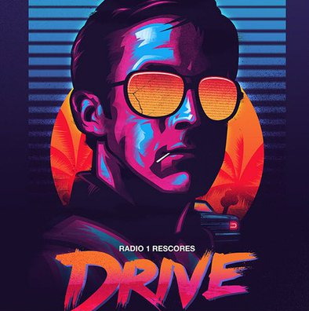

Les images
Les images peuvent être affichées avec deux balises : img et picture.
img va cherhcer directement l'image appelée, si les attributes de hauteur et de largeur ne sont pas indiqués, l'image s'affiche à sa taille originale. Si on modifie, par exemple, la largeur, la hauteur se recalcul en homothétie (le rapport hauteur - largeur est respecté).
img peut être appelé dans un paragraphe,
 mais elle déformera l'apparence du texte autour sauf si on lui donne une flottaison en CSS.
Si la flottaison est utilisée, il ne faut pas oublier de "nettoyer" l'effet de bord de la flottaison afin que les éléments qui suivent l'image mais qui ne doivent pas appliquer l'effet de flottaison soient correctement placés.
picture peut être préférée surtout au nivea de l'adaptatif.
picture utilise un ensemble d'images, de tailles et de poids différents, qu'on va afficher selon des conditions prédéfinie dans la balise source à l'intérieur de picture

A savoir que l'on peut utiliser une méthode similaire directement avec img.

Avec la sémantique pour le référencement, il existe une balise conteneur pour les média. figure. Elle possède une balise enfant, figcaption qui permet d'ajouter une légende à l'image : le combo image avec un nom lisible, un texte alternatif décrivant la photo plus une légende situant l'image dans un contexte particulier rend le référencement naturel optimisé.
La légende sera rattachée sémantiquement au document dans la figure.